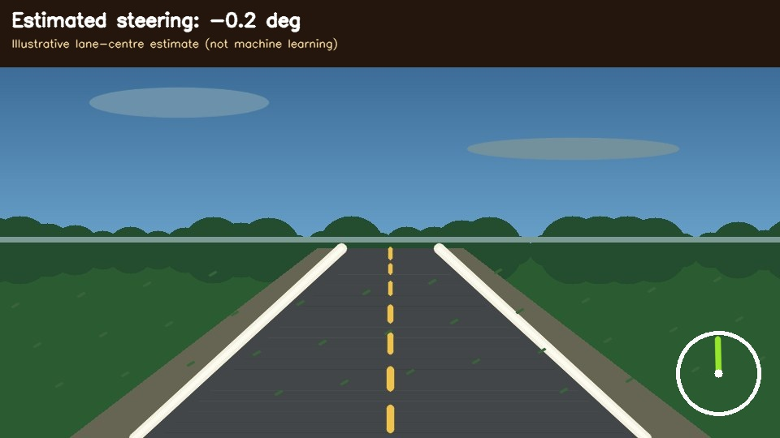

↗
RoadSense.Computer Vision · Interactive Research Demo
See the road. Understand the turn.
A working steering-angle visualisation built with Python and OpenCV. Explore measured lane geometry on original synthetic road footage—no driving hardware required.
160 processed frames8.0s test sequencePython + OpenCVEducational prototype
COMPUTED OUTPUT · SYNTHETIC ROAD

0:00 / 0:088-second sample · 20 FPS
Every displayed value was measured by the OpenCV lane-geometry estimator. The video is a recording, not a neural-network prediction or live webcam feed.
Explore three steering scenarios
Click to inspect processed sample frames
Want to analyse your own image or webcam?
Run the included Gradio Python app with python app.py. This GitHub Pages showcase replays verified computed results; fresh inference needs a running Python service.